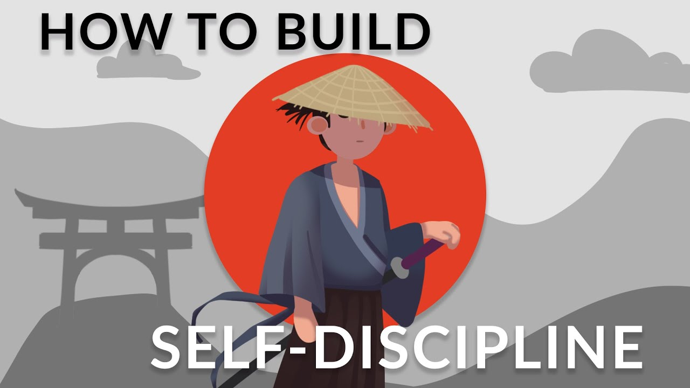
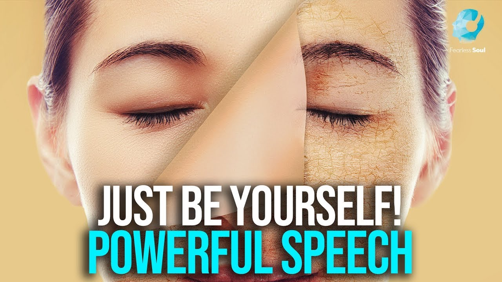

វិធីបង្កើនតេស្តូស្តេរ៉ូនតាមធម្មជាតិ - វិធី ៧ យ៉ាង
ស្វែងយល់ពីវិធីសាស្រ្តធម្មជាតិចំនួន 7 ដើម្បីបង្កើនកម្រិតតេស្តូស្តេរ៉ូន រួមទាំងការធ្វើលំហាត់ប្រាណ ការផ្លាស់ប្តូររបបអាហារ និងការកាត់បន្ថយភាពតានតឹង។
ចំណុចសំខាន់នៃវីដេអូ
- 🏋️ ការលើកទម្ងន់៖ ការចូលរួមក្នុងការហ្វឹកហ្វឺនធន់ទ្រាំមិនត្រឹមតែជួយបង្កើនម៉ាសសាច់ដុំប៉ុណ្ណោះទេ ថែមទាំងជួយលើកកម្ពស់តុល្យភាពអ័រម៉ូន ដែលធ្វើឱ្យវាក្លាយជាទិដ្ឋភាពមូលដ្ឋាននៃការពង្រឹងអ័រម៉ូនតេស្តូស្តេរ៉ូន។
- ❄️ បច្ចេកទេសត្រជាក់៖ សារៈសំខាន់នៃការគ្រប់គ្រងសីតុណ្ហភាព ជាពិសេសសម្រាប់សុខភាពបន្តពូជ បង្ហាញពីកត្តាដែលមិនសូវស្គាល់ក្នុងការផលិតអរម៉ូន។
- 💤 តួនាទីនៃការគេង៖ ការគេងប្រកបដោយគុណភាពខ្ពស់គឺមានសារៈសំខាន់សម្រាប់សុខភាពអ័រម៉ូន ព្រោះការផលិតអ័រម៉ូន Testosterone ភាគច្រើនកើតឡើងក្នុងអំឡុងពេលនៃការគេង ដោយសង្កត់ធ្ងន់លើតម្រូវការសម្រាប់អនាម័យនៃការគេង។
- 🥗 របបអាហារ៖ ការជ្រើសរើសរបបអាហារប៉ះពាល់ផ្ទាល់ដល់កម្រិតអរម៉ូន។ ការយល់ដឹងអំពីតួនាទីរបស់កូលេស្តេរ៉ុល និងការតមអាហារអាចនាំអោយមានលទ្ធផលសុខភាពប្រសើរជាងមុន និងតុល្យភាពអ័រម៉ូន។
- ⚖️ ការគ្រប់គ្រងកម្រិតអរម៉ូនអ៊ឹស្ត្រូសែន៖ ការយល់ដឹងអំពីសមតុល្យអរម៉ូនអ៊ឹស្ត្រូសែន - តេស្តូស្តេរ៉ូនមានសារៈសំខាន់ណាស់។ ការគ្រប់គ្រងជាតិខ្លាញ់ក្នុងរាងកាយ និងកត្តាបរិស្ថានអាចនាំឱ្យប្រសើរឡើងនូវប្រសិទ្ធភាពតេស្តូស្តេរ៉ូន។
- 🧘 ការគ្រប់គ្រងស្ត្រេស៖ ផលប៉ះពាល់ដ៏អាក្រក់របស់ Cortisol លើអ័រម៉ូន Testosterone បញ្ជាក់ពីតម្រូវការសម្រាប់បច្ចេកទេសកាត់បន្ថយស្ត្រេស ដែលអាចធ្វើឲ្យសុខុមាលភាពទូទៅ និងសុខភាពអ័រម៉ូនប្រសើរឡើង។
- 💪 Androgen Receptors៖ ទំនាក់ទំនងរវាងភាពអាចរកបាន និងប្រសិទ្ធភាពអ័រម៉ូន បង្ហាញពីសារៈសំខាន់នៃជម្រើសរបៀបរស់នៅក្នុងការបង្កើនឥទ្ធិពលរបស់អ័រម៉ូន Testosterone។
-

ការធ្វើជាម្ចាស់នៃការ កំណត់គោលដៅជាមួយនឹងលក្ខណៈវិនិច្ឆ័យឆ្លាតវៃ
វីដេអូគាត់ណែនាំអំពីលក្ខណៈវិនិច្ឆ័យ SMART សម្រាប់ការកំណត់គោលដៅប្រកបដោយប្រសិទ្ធភាព ដែលតំណាងឱ្យជាក់លាក់ វាស់វែងបាន សម្រេចបាន ពាក់ព័ន្ធ និងពេលវេលាកំណត់។ វាសង្កត់ធ្ងន់លើសារៈសំខាន់នៃការកំណត់គោលដៅឱ្យបានច្បាស់លាស់ និងលម្អិត (ជាក់លាក់) ធានាថាវឌ្ឍនភាពអាចត្រូវបានតាមដាន និងវាស់វែងបានជោគជ័យ (អាចវាស់វែងបាន)។
-

Jordan Peterson: ផ្លាស់ប្ដូខ្លួនអ្នកមុនកុំឲ្យយឺតពេល
កំណត់គោលដៅជាក់លាក់ជាក់លាក់; បង្កើតផែនការសកម្មភាពលម្អិត; រក្សាការលើកទឹកចិត្ត; តាមដានវឌ្ឍនភាពរបស់អ្នក; ត្រៀមខ្លួនដើម្បីជំនះឧបសគ្គ; ស្វែងរកមនុស្សគាំទ្រ; រក្សាភាពបត់បែន; អបអរសាទរព្រឹត្តិការណ៍សំខាន់ៗ; រៀនពីការបរាជ័យ; និងរក្សាផ្នត់គំនិតវិជ្ជមាន។ គន្លឹះទាំងនេះមានគោលបំណងជួយអ្នកឱ្យសម្រេចគោលដៅរបស់អ្នកប្រកបដោយប្រសិទ្ធភាព។
-

Miyamoto Musashi - របៀបបង្កើតវិន័យខ្លួនឯង
"Dokkodo" របស់ Miyamoto Musashi គូសបញ្ជាក់ពីគោលការណ៍ចំនួន 21 សម្រាប់ការលត់ដំខ្លួនដោយ 5 ចំនុចដំបូងដែលសង្កត់ធ្ងន់ទៅលើការទទួលយក ធម្មជាតិនៃការរីករាយ ការសំរេចចិត្ត ការយល់ដឹងពីខ្លួនឯង និងការផ្តាច់ចេញពីការចង់បាន។
-
របៀបក្នុងការបង្កើតទំនាក់ទំនង
ផ្តល់នូវគន្លឹះ និងយុទ្ធសាស្ត្រជាក់ស្តែងសម្រាប់ការចាប់ផ្តើមការសន្ទនា សូម្បីតែជាមួយមនុស្សចម្លែកក៏ដោយ។ វាផ្តោតលើការកសាងទំនុកចិត្ត ការប្រើសំណួរបើកចំហ និងការចាប់អារម្មណ៍យ៉ាងពិតប្រាកដចំពោះអ្នកដ៏ទៃ។ វីដេអូនេះសង្កត់ធ្ងន់លើសារៈសំខាន់នៃការស្តាប់យ៉ាងសកម្ម ធ្វើការសង្កេត និងស្វែងរកមូលដ្ឋានរួម ដើម្បីរក្សាការសន្ទនាឱ្យដំណើរការដោយធម្មជាតិ។ វាជាមគ្គុទ្ទេសក៍សម្រាប់ជំនះការថប់បារម្ភក្នុងសង្គម និងកាន់តែមានផាសុកភាពក្នុងការប្រាស្រ័យទាក់ទងគ្នាក្នុងសង្គម។
-

ថវិធីកែលម្អខ្លួនអ្នកឥឡូវនេះ (ហើយហេតុអ្វី)
វីដេអូនេះសង្កត់ធ្ងន់លើសារៈសំខាន់នៃការធ្វើសកម្មភាពឥឡូវនេះ ជាជាងការពន្យារពេលលើគោលដៅកែលម្អខ្លួនឯង។ អ្នកមើលត្រូវបានលើកទឹកចិត្តឱ្យចាប់ផ្តើមធ្វើការផ្លាស់ប្តូរភ្លាមៗ ដើម្បីឃើញលទ្ធផលនៅក្នុងជីវិតរបស់ពួកគេ។
-
.jpg)
អំណាចនៃការមិនប្រតិកម្ម | ទម្លាប់ 12 ដើម្បីគ្រប់គ្រងអារម្មណ៍របស់អ្នក។
ស្តាប់ទៅដូចជាអ្នកកំពុងយោងវីដេអូ ឬប្រធានបទដែលទាក់ទងនឹងការគ្រប់គ្រងអារម្មណ៍ និងថាមពលនៃការមិនប្រតិកម្ម។ តើអ្នកចង់បានសេចក្ដីសង្ខេបនៃគោលគំនិតពីវីដេអូបែបនេះ ឬសេចក្ដីលម្អិតបន្ថែមទៀតអំពីយុទ្ធសាស្ត្រក្នុងការគ្រប់គ្រងអារម្មណ៍ប្រកបដោយប្រសិទ្ធភាព?
-
.jpg)
ល្បិចសាមញ្ញនេះនឹងធ្វើឱ្យអ្នកមានការលើកទឹកចិត្តជារៀងរាល់ថ្ងៃ (រឿងមានចលនា)
ផ្តល់នូវគន្លឹះ និងយុទ្ធសាស្ត្រជាក់ស្តែងសម្រាប់ការចាប់ផ្តើមការសន្ទនា សូម្បីតែជាមួយមនុស្សចម្លែកក៏ដោយ។ វាផ្តោតលើការកសាងទំនុកចិត្ត ការប្រើសំណួរបើកចំហ និងការចាប់អារម្មណ៍យ៉ាងពិតប្រាកដចំពោះអ្នកដ៏ទៃ។ វីដេអូនេះសង្កត់ធ្ងន់លើសារៈសំខាន់នៃការស្តាប់យ៉ាងសកម្ម ធ្វើការសង្កេត និងស្វែងរកមូលដ្ឋានរួម ដើម្បីរក្សាការសន្ទនាឱ្យដំណើរការដោយធម្មជាតិ។ វាជាមគ្គុទ្ទេសក៍សម្រាប់ជំនះការថប់បារម្ភក្នុងសង្គម និងកាន់តែមានផាសុកភាពក្នុងការប្រាស្រ័យទាក់ទងគ្នាក្នុងសង្គម។
-
.jpg)
5 ប្រភេទនៃមនុស្សដែលអ្នកគួរឈប់ធ្វើជាមិត្តជាមួយ
វីដេអូនេះសង្កត់ធ្ងន់លើសារៈសំខាន់នៃការនៅជុំវិញខ្លួនអ្នកជាមួយនឹងមនុស្សវិជ្ជមាន លើកកំពស់មនុស្សដែលលើកទឹកចិត្តដល់ការលូតលាស់ និងភាពជោគជ័យរបស់អ្នក ជាជាងអ្នកដែលបង្អត់ថាមពលរបស់អ្នក ឬធ្វើឱ្យអ្នកធ្លាក់ចុះ។
-
.jpg)
9 មេរៀននៃការរៀនភាសាកូដ
ផ្ដោតទៅលើការណែនាំអំពីរគោលបំណងខ្លះៗនៃការរៀនភាសាកូដឲកាន់តែមានប្រសិទ្ធភាព ចាប់ពីមូលដ្ឋានគ្រឹះរហូតដល់កម្រិតខ្ពស់
-
.jpg)
រៀនចែកចាយបទបង្ហាញដោយទំនុកចិត្តជាភាសាអង់គ្លេស!
ការផ្តល់បទបង្ហាញប្រកបដោយទំនុកចិត្តគឺជាជំនាញដ៏មានតម្លៃ ជាពិសេសនៅក្នុងបរិយាកាសបច្ចេកវិទ្យាសកល។ ដែលអ្នកទាំងអស់គ្នាតែងតែគិតថានេះជារឿងសំខាន់បំផុតនៅពេលអ្នកធ្វើបទបង្ហាញពីកិច្ចការសាលាឬ កន្លែងការងារជាដើម ។ ក្នុងវីដេអូនេះ នឹងប្រាប់អ្នកនូវចំណុចសំខាន់ៗ មុននឹងអ្នកឡើងធ្វើបទបង្ហាញជាសាធារណៈ ។
-
.jpg)
I Was POOR - ការផ្លាស់ប្តូរផ្នត់គំនិតទាំង 17 នេះបានធ្វើឱ្យខ្ញុំក្លាយជាអ្នកមាន: អាថ៌កំបាំងនៃគំនិតមហាសេដ្ឋី
ការផ្លាស់ប្តូរផ្នត់គំនិតសំខាន់ៗ ដែលជួយអ្នកបង្កើតផ្លាស់ប្តូរពីភាពក្រីក្រទៅជាទ្រព្យសម្បត្តិ។ វាសង្កត់ធ្ងន់ទៅលើការប្រកាន់យកនូវចិត្តគំនិតដែលផ្តោតលើការលូតលាស់ ភាពសំបូរបែប ការទទួលខុសត្រូវចំពោះលទ្ធផលហិរញ្ញវត្ថុ ការរៀនសូត្រជាបន្តបន្ទាប់ និងត្រូវមានវិន័យជាមួយនឹងការគ្រប់គ្រងលុយ។ វីដេអូនេះក៏ប្រហែលជាបង្ហាញពីសារៈសំខាន់នៃការកំណត់គោលដៅច្បាស់លាស់ ទទួលយកហានិភ័យដែលបានគណនា និងជុំវិញខ្លួនឯងជាមួយនឹងឥទ្ធិពលវិជ្ជមាន ដើម្បីសម្រេចបានជោគជ័យផ្នែកហិរញ្ញវត្ថុ និងឯករាជ្យភាព។
-

ធ្វើជាខ្លួនរបស់អ្នក
វីដេអូ "BE YOURSELF - ការចងក្រងវីដេអូលើកទឹកចិត្ត" ទំនងជាបណ្តុំនៃសុន្ទរកថា និងសារលើកទឹកចិត្តដែលផ្តោតលើប្រធានបទនៃភាពត្រឹមត្រូវ និងការទទួលយកខ្លួនឯង។ វាលើកទឹកចិត្តអ្នកមើលឱ្យពួកគេដឹងថាគេជានរណា ដេញតាមចំណង់ចំណូលចិត្តរបស់ពួកគេ និងមិនធ្វើតាមការរំពឹងទុករបស់អ្នកដទៃ។ ប្រភេទនៃការចងក្រងទាំងនេះជាធម្មតារួមមានសម្រង់បំផុសគំនិត ការណែនាំអំពីការអភិវឌ្ឍន៍ផ្ទាល់ខ្លួន និងការផ្តល់អំណាចដល់តន្ត្រីដើម្បីលើកកម្ពស់ និងលើកទឹកចិត្តទស្សនិកជន។
-
.jpg)
STOP WASTING TIME - ភាគ១ | Video លើកទឹកចិត្តដើម្បីជោគជ័យ និងការសិក្សា (Ft. Coach Hire)
សង្កត់ធ្ងន់លើសារៈសំខាន់នៃការគ្រប់គ្រងពេលវេលា និងប្រើប្រាស់ពេលវេលាច្រើនបំផុត។ ដោយមាន Coach Hite វាលើកទឹកចិត្តអ្នកមើលឱ្យឈប់ពន្យារពេល ផ្តោតលើគោលដៅរបស់ពួកគេ និងប្រើប្រាស់ពេលវេលារបស់ពួកគេឱ្យមានប្រសិទ្ធភាពដើម្បីសម្រេចបានជោគជ័យក្នុងការសិក្សា និងជីវិតរបស់ពួកគេ។ សារនេះទំនងជាមានការលើកទឹកចិត្ត មានគោលបំណងបំផុសនូវវិន័យ ផលិតភាព និងក្រមសីលធម៌ការងារដ៏រឹងមាំ ដើម្បីឈានទៅដល់គោលដៅផ្ទាល់ខ្លួន និងការសិក្សា។
-
.jpg)
រាល់បច្ចេកទេសសិក្សាប្រកបដោយប្រសិទ្ធភាពត្រូវបានពន្យល់ | រៀនឆាប់ពូកែក្នុងរយៈពេល 7 នាទី |
សង្ខេបនៃបច្ចេកទេសសិក្សាផ្សេងៗ ដើម្បីជួយសិស្សឱ្យរៀនកាន់តែមានប្រសិទ្ធភាព។ វាអាចគ្របដណ្ដប់លើវិធីសាស្រ្តដូចជា ការរំលឹកឡើងវិញសកម្ម ការធ្វើពាក្យដដែលៗដោយដកឃ្លា បច្ចេកទេស Pomodoro ការធ្វើផែនទីគំនិត និងយុទ្ធសាស្រ្តកត់ត្រា។ វីដេអូនេះមានគោលបំណងផ្តល់ឱ្យអ្នកទស្សនានូវគន្លឹះជាក់ស្តែងដើម្បីបង្កើនការរក្សាទុក និងការយល់ដឹងអំពីសម្ភារៈក្នុងរយៈពេលដ៏ខ្លី ដែលធ្វើឱ្យការសិក្សាកាន់តែមានប្រសិទ្ធភាព និងចំណាយពេលតិច។
-
.jpg)
របៀបចាប់ផ្តើមអាជីវកម្មខ្នាតតូចដែលមិនបរាជ័យ និងធ្វើឱ្យអ្នកមានសេរីភាពផ្នែកហិរញ្ញវត្ថុ
ផ្តល់ដំបូន្មានជាក់ស្តែងសម្រាប់ការចាប់ផ្តើមអាជីវកម្មខ្នាតតូចដែលទទួលបានជោគជ័យ។ វាអាចគ្របដណ្តប់លើជំហានសំខាន់ៗដូចជា ការកំណត់ទីផ្សារពិសេសដែលរកបានប្រាក់ចំណេញ ការបង្កើតផែនការអាជីវកម្មដ៏រឹងមាំ ការគ្រប់គ្រងហិរញ្ញវត្ថុប្រកបដោយភាពឆ្លាតវៃ និងការយល់ដឹងអំពីទីផ្សារ។ វីដេអូនេះក៏ទំនងជាបញ្ជាក់ពីសារៈសំខាន់នៃការតស៊ូ ការសម្របខ្លួន និងការសិក្សាបន្ត។ គោលដៅគឺដើម្បីជួយអ្នកមើលឱ្យជៀសផុតពីបញ្ហាទូទៅ និងសម្រេចបាននូវឯករាជ្យភាពផ្នែកហិរញ្ញវត្ថុតាមរយៈការខិតខំប្រឹងប្រែងអាជីវកម្មរបស់ពួកគេ។
-
.jpg)
13 ទម្លាប់ប្រចាំថ្ងៃដែលធ្វើអោយអ្នកឆ្លាតជាងមុន
ការអនុវត្តប្រចាំថ្ងៃដ៏សាមញ្ញ ដែលអាចបង្កើនសមត្ថភាពយល់ដឹង និងបញ្ញាទូទៅ។ ទម្លាប់ទាំងនេះអាចរួមបញ្ចូលសកម្មភាពដូចជាការអានជាទៀងទាត់ ចូលរួមក្នុងល្បែងផ្គុំរូបដែលមានបញ្ហា រក្សារបបអាហារដែលមានសុខភាពល្អ ការអនុវត្តការគិត រៀនជំនាញថ្មីៗ លំហាត់ប្រាណ និងការចង់ដឹងចង់ឃើញអំពីពិភពលោក។ វីដេអូនេះសង្កត់ធ្ងន់លើសារៈសំខាន់នៃភាពជាប់លាប់នៅក្នុងទម្លាប់ទាំងនេះ ដើម្បីបង្កើនភាពមុតស្រួចផ្លូវចិត្ត និងការលូតលាស់បញ្ញាបន្តិចម្តងៗតាមពេលវេលា។
-
ឧកញ៉ា គួច ម៉េងលី | ត្រូវចេះមានវិន័យ ចំពោះខ្លួនឯង | Self Discipline
ហេតុអ្វីយើង ត្រូវចេះមានវិន័យ ចំពោះខ្លួនឯង | ចក្ខុវិស័យ គួច ម៉េងលី សូមស្តាប់ប្រសាសន៍រប់ស់ ឧកញ៉ា គួច ម៉េងលី ដែលគាត់បកស្រាយអំពី អត្ថប្រយោជន៍ ផ្សេងៗ នៃការមានវីន័យចំពោះខ្លួនឯង និងការម៉តចត់ច្បាស់លាស់ចំពោះ ការងារ ការសិក្សារ ការស្រាវជ្រាវ ការសេបគប់មិត្តភក្តិ និង ការរស់នៅក្នុងសង្គម ជាដើម។
-
.jpg)
វិធី ជម្នះ ពេលចិត្ត ចង់បោះបង់
ប៉ុន្មានលើកហើយដែលអ្នក ចាប់ផ្ដើម ប៉ុន្តែក៏បោះបង់? ប៉ុន្តែវាមិនជាការបរាជ័យនោះទេ ព្រោះត្រូវចាំថាអ្នកអាចត្រឡប់ទៅសាកល្បងវាម្ដងទៀតបាន។
-
.jpg)
វីដេអូដែលអាចផ្លាស់ប្ដូរជីវិតអ្នក | តើខ្ញុំគួរចាប់ផ្ដើមដោយរបៀបណា ? | ជម្នះភាពភ័យខ្លាច
ការចាប់ផ្ដើមផ្លាស់ប្ដូរជីវិត និងជម្នះភាពភ័យខ្លាចគឺជាដំណើរដែលតម្រូវឱ្យមានការចាប់ផ្ដើមពីខ្លួនឯងជាមុនសិន។ វាតម្រូវឱ្យមានការពេញចិត្តក្នុងការផ្លាស់ប្ដូរ និងការសម្រេចចិត្តក្នុងការគ្រប់គ្រងអារម្មណ៍របស់អ្នក។ នេះជាចំនុចជាដំណើរដំបូងដែលអ្នកអាចចាប់ផ្ដើមដើម្បីផ្លាស់ប្ដូរជីវិត និងលើកទឹកចិត្តផ្លាស់ប្ដូរពីភាពភ័យខ្លាច
-
.jpg)
ហេតុអី្វបានជាយើងមិនអាចផ្តោតអារម្មណ៍បាន?
កូនសិស្សជីវិត" ជាប្រភេទសៀវភៅអប់រំបែបលើកទឹកចិត្តដែលប្រមូលផ្តុំទៅដោយអត្ថបទខ្លីៗ បង្កប់ន័យអប់រំពីជីវិត និងសាងកម្លាំងចិត្ត។
-
.jpg)
ជំងឺភ័យខ្លាច - Kou Sopheap - គូ សុភាព | ធម៌អប់រំចិត្ត - Khmer Dhamma 2, អាហារផ្លូវចិត្ត, Kou Sopheap
កូនសិស្សជីវិត" ជាប្រភេទសៀវភៅអប់រំបែបលើកទឹកចិត្តដែលប្រមូលផ្តុំទៅដោយអត្ថបទខ្លីៗ បង្កប់ន័យអប់រំពីជីវិត និងសាងកម្លាំងចិត្ត។